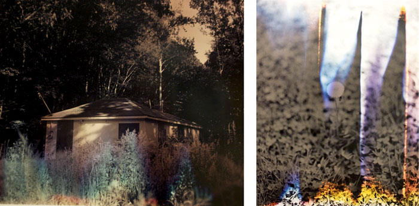

exhibition archive |
||
Wildlife Analysisby Bryan Graf Sept 15 – Oct 31, 2009 Images Above: |
The Wild Project is pleased to present Wildlife Analysis, the first solo exhibition of photographs by Bryan Graf. His atmospheric landscapes explore the spaces between description and invention, representation and abstraction. In his photographs, Graf draws on the unexpected details of the natural environment surrounding New Jersey’s post- industrial landscapes. Black and white images of dandelions, crab grass and butterflies serve as a foundation for the work. When printing in the darkroom Graf adds an additional layer of fogged color film. The results, much of which are left to chance, give way to arresting and hallucinatory imagery. Accumulation plays an important role in Graf’s photographs. Influenced by the landscape paintings of Gustave Courbet and Peter Doig, he re-visits one image or one place, allowing the cumulative experience to take control of the work. Whether the modification is of a small detail, the use of color or cropping, the repetitious nature of the images lead the viewer through his elusive wanderings. Bryan Graf was born in New Jersey in 1982. He received his BFA from the Art Institute of Boston at Lesley University in 2005 and received his MFA from Yale University School of Art in 2008. His work has been included in several group exhibitions and in Blind Spot Magazine. This is the second collaboration for curators Hilary Schaffner and Kate Greenberg. For more information please contact Hilary Schaffner at 212. 228.1195 or info@thewildproject.com. The Wild Project, an environmentally conscious venue for contemporary theater, film, and visual arts, is dedicated to supporting the arts by offering space and resources to emerging artists. The first gallery and theatre space in New York City to have a green roof with numerous varieties of plant species, Wild Project's programming intends to cultivate a supportive artistic network, explore innovative and thoughtful approaches to art making and by doing so enrich the local community. |
|
exhibition archive |
|||
| 2016 | 2015 | 2014 | 2013 |
| 2011 | 2010 | 2009 | 2008 |